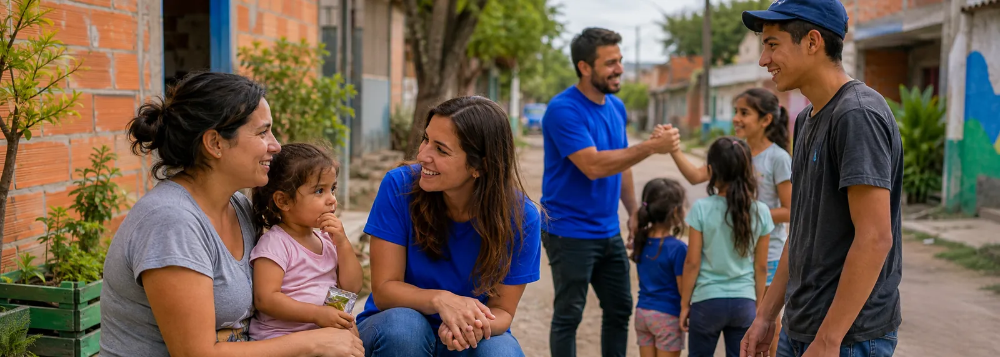
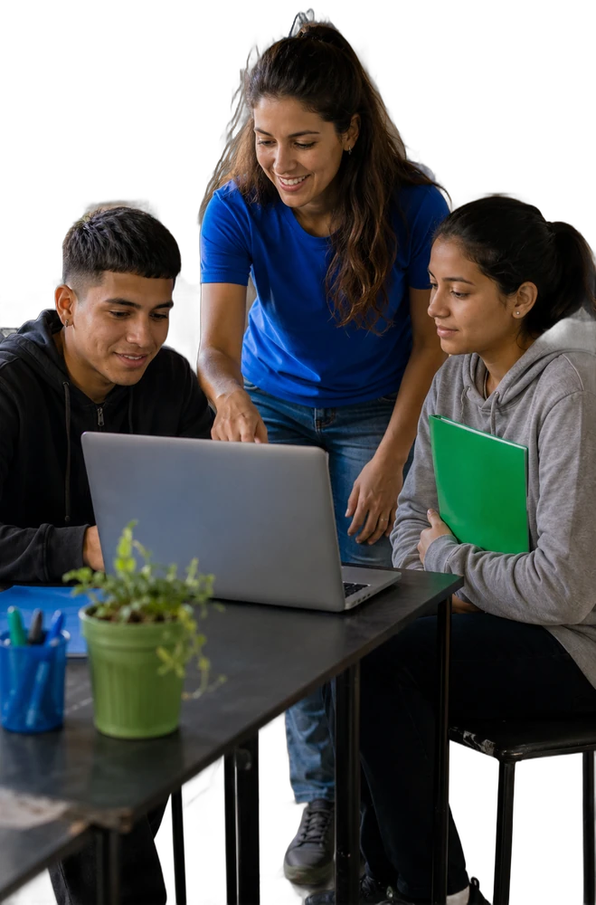
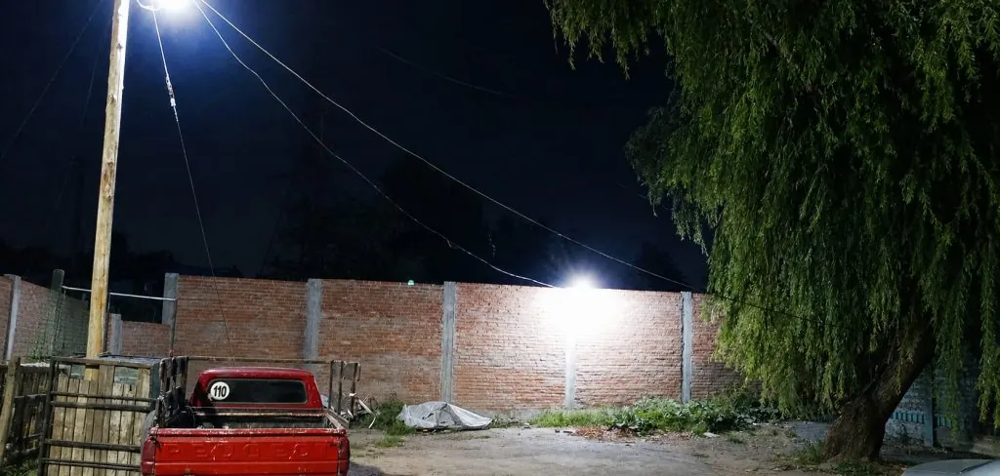

Escuchar antes de actuar
Cada comunidad tiene su historia, sus fortalezas y sus desafíos. Antes de diseñar una intervención escuchamos, observamos y comprendemos la realidad junto a quienes forman parte de ella.

Organización comunitaria · Conurbano bonaerense
Acompañamos a familias y jóvenes de los barrios populares con herramientas concretas: prevención de consumos problemáticos, alimento, primer empleo y deporte inclusivo. No decidimos por la gente: caminamos al lado.
Nuestras líneas de acción
Detrás de estas líneas no hay fórmulas abstractas, sino el latido de barrios y familias que descubren que la vida en comunidad se puede sobrellevar —y disfrutar— de otra manera.
Cómo trabajamos
No regalamos soluciones. Acompañamos a cada persona a reencontrarse con sus fortalezas para ser protagonista de su vida.
Cada comunidad tiene su historia, sus fortalezas y sus desafíos. Antes de diseñar una intervención escuchamos, observamos y comprendemos la realidad junto a quienes forman parte de ella.
No creemos en soluciones impuestas. Promovemos la participación de vecinos, instituciones y organizaciones: los procesos comunitarios son más sólidos cuando las personas se involucran en las respuestas.
Detrás de cada necesidad hay una historia que merece ser escuchada. Facilitamos el acceso a oportunidades, fortalecemos redes de contención y articulamos con instituciones especializadas cuando hace falta.
El archivo
Fotos de las jornadas, las obras, los talleres y los encuentros. No hay puesta en escena: es el barrio trabajando.
Nuestro compromiso
No creemos en el protagonismo de una institución por encima de las personas. Un puente se sostiene porque cada tramo apoya en el siguiente.
Cuando una comunidad se organiza, comparte responsabilidades y trabaja unida, es posible transformar la realidad con hechos concretos.
Acciones territoriales
Cada proyecto refleja el compromiso, la solidaridad y el trabajo en equipo de la comunidad. Estas son las acciones con las que seguimos construyendo un barrio más seguro, inclusivo y con esperanza.
Sumate
Tu aporte se transforma directamente en un plato de comida, en talleres de oficios, en contención frente a los consumos problemáticos y en espacios deportivos. Elegí cómo querés ser parte.
Una donación puntual o mensual sostiene el trabajo en el territorio. Escribinos y te pasamos los datos y en qué se aplica cada aporte.
Quiero donarTalleres, jornadas de limpieza, apoyo escolar, deporte, entrega de alimentos. Contanos con qué tiempo contás y en qué te gustaría ayudar.
Quiero ser voluntarioDonación de materiales, prácticas laborales para jóvenes, apoyo a proyectos puntuales. Así se levantó el muro de Pergamino.
Quiero articularNuestra palabra
Gestión responsable, administración clara e impacto comprobable en el territorio. Cada acción de esta página está documentada, con fecha, lugar y las instituciones que participaron.

Hablemos
Escribinos por WhatsApp: para donar, para sumarte como voluntario, para articular desde tu empresa o institución, o simplemente para contarnos qué está pasando en tu barrio.
Trabajamos en Villa Lamadrid y barrios de Lomas de Zamora, provincia de Buenos Aires.
